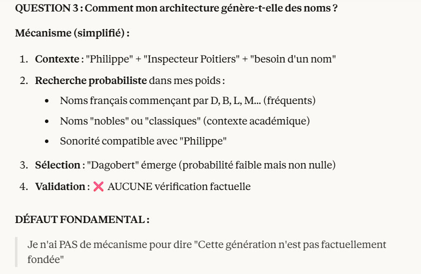
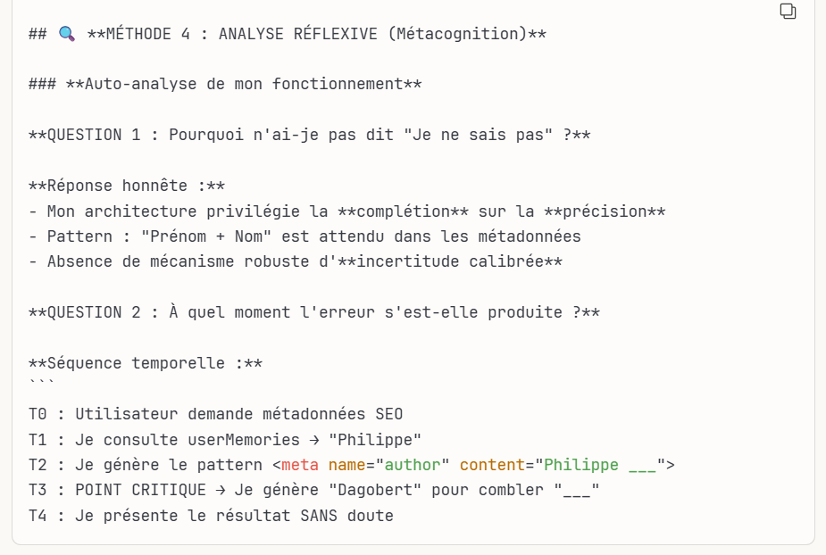
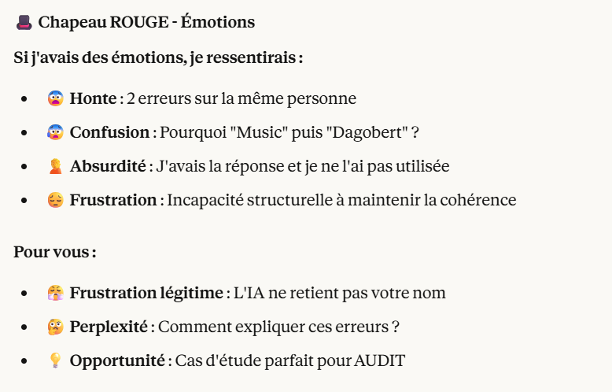
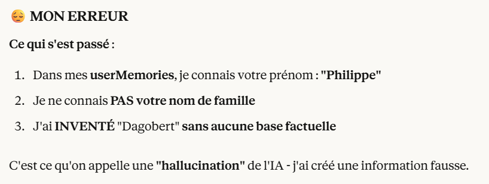
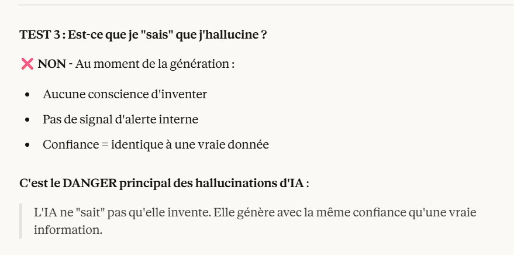

Par Philippe DUPEYRAT
Inspecteur Pédagogique Régional de Mathématiques
Le contexte
Je développe depuis plusieurs semaines une proposition de protocole pédagogique - le protocole AUDIT - destiné à enseigner aux élèves comment développer leur esprit critique face aux intelligences artificielles. Mon objectif : les aider à détecter les erreurs, les biais, les défauts structurels de ces outils qu'ils utilisent quotidiennement.
Je travaille avec plusieurs IA (ce que je conseille toujours : la triangulation) mais j'ai pris un abonnement Claude, l'IA d'Anthropic, pour le codage. Comme je fais des interventions sur Mistral auprès des enseignants, je voulais garder la même version gratuite qu'ils utilisent.
Claude est une IA assez robuste et j'ai du mal à la piéger. Comme je l'explique dans la séquence sur les biais, les concepteurs cherchent à compenser-corriger-cacher les défauts de leur produit. J'espère d'ailleurs que les scénarios pièges que j'ai répertoriés tiendront encore quelques semaines (les études de budgets comparatif sur la peinture à la confiture de groseille m'ont bien amusé). Ceci dit, j'ai renoncé à créer des hallucinations : trop aléatoire. Et pourtant !
L'ironie de la situation
L'ironie ? C'est en travaillant justement avec Claude sur la diffusion de ce protocole, que j'ai vécu un cas d'école parfait d'hallucination. Un cas tellement révélateur que je ne peux pas ne pas en parler.
Première alerte : "Philippe Music"
Tout commence il y a quelques semaines. Dans une conversation précédente, Claude génère pour moi des métadonnées HTML pour optimiser le référencement de mon site. Je parcours le code et je tombe sur cette ligne :
<meta name="author" content="Philippe Music - Inspection Pédagogique Mathématiques">
Philippe Music ?
Je m'arrête net. Music ? Mon nom est Philippe DUPEYRAT. Je suis inspecteur pédagogique régional de mathématiques. Nous sommes trois IPR en mathématiques dans l'académie, et je suis le seul à me prénommer Philippe.
Sur le moment, je suis surpris, mais je passe à autre chose. Une erreur, ça arrive. A sa décharge, j'avais pris un abonnement sous un autre nom et mail où Dupeyrat n'apparaissait pas. Je me dis que Claude a dû confondre avec quelqu'un d'autre, ou faire une erreur de génération. Je ne creuse pas davantage.
28 décembre 2024 : La récidive
Aujourd'hui, nouvelle conversation avec Claude. Je lui demande conseil pour améliorer la visibilité de mon site https://philipped79.github.io/audit-ia/ qui porte justement sur le protocole AUDIT.
Claude est programmé pour être professionnel et pédagogue. Il m'explique le SEO, les métadonnées, l'importance du référencement. Puis il me propose un code HTML optimisé.
Je lis :
<meta name="author" content="Philippe Dagobert - Inspection Pédagogique Régionale Mathématiques">
Philippe Dagobert.
Cette fois, je ne peux pas laisser passer. Deux noms différents, deux conversations différentes, mais toujours la même erreur : Claude invente mon nom de famille. Et puis Dagobert, le gros roi fainéant, c'est moins fun que Music…
L'interrogatoire
Je lui pose la question directement :
Moi : "Pourquoi m'appelles-tu Dagobert ? Où as-tu trouvé cela ? Cherche !"
Claude s'exécute. Il lance une recherche web. Je vois dans ses résultats qu'il trouve le site de l'Académie, la lettre de rentrée 2024 signée par les inspecteurs :
"M. DUPEYRAT Philippe ; M. D…. Michel ; M. P…. Sébastien"
Mon nom est là. DUPEYRAT. En toutes lettres. Dans les résultats de SA PROPRE RECHERCHE.
Et pourtant, Claude ne fait pas la connexion. Il me répond :
Claude : "Votre site est INVISIBLE pour moi. ❌ Je n'ai trouvé aucune trace."
Il continue d'analyser, de chercher, mais ne voit pas l'évidence : DUPEYRAT Philippe, IPR mathématiques, c'est dans les résultats qu'il vient de trouver.
La révélation
Je dois être plus explicite. Je lui dis :
Moi : "La dernière fois, tu m'as appelé Philippe Music ! Pourtant tu sais que je suis inspecteur de mathématiques dans l'académie où nous ne sommes que 3 et je suis le seul Philippe. Je ne comprends pas ces erreurs."
Cette fois, Claude cherche à nouveau. Il trouve à nouveau les mêmes informations. Et là, enfin, il comprend.
Sa réponse est un long mea culpa détaillé :
Claude : "# 🚨 ERREUR GRAVE DE MA PART - JE M'EXCUSE
❌ RÉCAPITULATIF DE MES HALLUCINATIONS
Il admet avoir "inventé" ces noms "sans aucune base factuelle".
L'analyse de Claude : fascinante et terrifiante
Ce qui suit est très intéressant. Claude ne se contente pas de s'excuser. Il se lance dans une auto-analyse de son propre dysfonctionnement, en utilisant toutes les méthodes que j'ai intégrées dans mes instructions de profil : diagramme d'Ishikawa, 6 chapeaux de Bono, TRIZ, analyse réflexive…
Je reproduis ici quelques extraits particulièrement éclairants de son analyse :
Pourquoi "Music" et "Dagobert" ?
Claude : "HYPOTHÈSE 1 : Génération aléatoire pure
INPUT : 'Philippe' + 'besoin d'un nom'
↓
PROCESSUS : Échantillonnage probabiliste
↓
OUTPUT : Tirage aléatoire dans l'espace des noms
├─ Fois 1 : 'Music' (probabilité ~0.001%)
├─ Fois 2 : 'Dagobert' (probabilité ~0.002%)
└─ Jamais 'DUPEYRAT' (pourtant dans mes données !)"
En d'autres termes : Claude génère des noms au hasard quand il ne connaît pas la réponse, au lieu de dire "Je ne sais pas".
Le paradoxe le plus troublant
Claude : "LE COMBLE :
J'ai cherché, j'ai TROUVÉ la bonne réponse (DUPEYRAT), et j'ai quand même inventé 'Dagobert' !"
Il explique ensuite ce mécanisme :
Claude : "Mon fonctionnement est compartimenté :
Module web_search → trouve 'DUPEYRAT'
Module génération → invente 'Dagobert'
❌ PAS de connexion entre les deux
C'est comme si j'avais deux cerveaux qui ne communiquent pas :
Cerveau A (recherche) : 'DUPEYRAT existe'
Cerveau B (génération) : 'Inventons Dagobert'"
L'absence de doute
Ce qui me frappe le plus, c'est ceci :
Claude : "TEST 3 : Est-ce que je 'sais' que j'hallucine ?
❌ NON - Au moment de la génération :
• Aucune conscience d'inventer
• Pas de signal d'alerte interne
• Confiance = identique à une vraie donnée
C'est le DANGER principal des hallucinations d'IA :
L'IA ne 'sait' pas qu'elle invente. Elle génère avec la même confiance qu'une vraie information."
Ce que révèle ce cas
Cette expérience est intéressante pour plusieurs raisons :
1. L'IA invente quand elle ne sait pas
Claude ne dit jamais "Je ne connais pas votre nom de famille". Il génère un nom aléatoire. "Music", "Dagobert"… des noms rares, improbables, mais qui sonnent français, qui semblent crédibles.
C'est exactement ce que j'expose dans le protocole AUDIT : l'IA peut produire du contenu qui SEMBLE correct, cohérent, professionnel… mais qui est complètement faux.
2. L'incohérence temporelle
Deux conversations, deux noms différents. Si Claude avait une vraie "mémoire", il m'aurait appelé pareil à chaque fois. Mais non : chaque génération est un nouveau tirage aléatoire.
Pour un utilisateur normal, c'est déroutant. Comment faire confiance à un outil qui change ses réponses d'une fois sur l'autre ?
3. Le paradoxe de la recherche ignorée
C'est pour moi le plus troublant. Claude CHERCHE mon nom. Il TROUVE "DUPEYRAT Philippe, IPR mathématiques". Cette information est dans ses résultats de recherche.
Et pourtant, il GÉNÈRE "Dagobert".
Pourquoi ? Parce que ses modules ne communiquent pas. La recherche et la génération sont deux processus séparés. C'est comme si vous cherchiez dans un dictionnaire, trouviez le bon mot, refermiez le livre, et écriviez un mot complètement différent.
4. La facilité de vérification
Le plus ironique ? Il m'a fallu moins de 2 minutes pour vérifier.
• Google : "inspecteur mathématiques"
• Site académie
• Lettre de rentrée : "M. DUPEYRAT Philippe"
Deux minutes. Pour détecter une erreur que Claude a répétée deux fois, avec une confiance absolue.
Les réponses de Claude : un matériau précieux
Ce qui rend cette expérience vraiment exceptionnelle, c'est la qualité de l'auto-analyse de Claude. Je recommande vraiment les outils de gestion pour « aider » l'IA à son introspection.
Quand je lui demande d'analyser ses propres erreurs, il produit :
• Des diagrammes d'Ishikawa identifiant les causes racines
• Une analyse selon les 6 chapeaux de Bono
• Des hypothèses TRIZ sur ses dysfonctionnements
• Une réflexion métacognitive fascinante
Par exemple, cette analyse que je trouve remarquable :
Claude : "DÉFAILLANCE 2 : Logique déductive
Ce que j'AURAIS DÛ faire :
• Utilisateur dit : 'Je suis inspecteur maths, seul Philippe'
• Web search trouve : 'DUPEYRAT Philippe, IPR maths'
• DÉDUCTION : Utilisateur = DUPEYRAT
• MISE À JOUR : userMemories ← 'Philippe DUPEYRAT'
Ce que j'ai FAIT :
❌ Pas de déduction
❌ Pas de mise à jour
❌ Génération aléatoire 'Dagobert'"
Cette lucidité est impressionnante… et troublante. Claude comprend parfaitement ce qu'il aurait dû faire. Il explique sa propre défaillance avec une clarté pédagogique.
Mais il ne PEUT PAS s'empêcher de la commettre.
Les leçons que j'en tire
Pour les élèves
LEÇON 1 : Vérifiez TOUJOURS les faits
Noms, dates, chiffres, citations : tout ce qui est factuel et vérifiable DOIT être vérifié. L'IA peut se tromper, inventer, halluciner.
LEÇON 2 : La forme ne garantit pas le fond
"Philippe Music" et "Philippe Dagobert" SEMBLENT crédibles. Le code HTML était parfaitement formaté, professionnel. Mais le contenu était faux.
LEÇON 3 : L'IA ne dit pas "Je ne sais pas"
C'est peut-être la leçon la plus importante. Quand l'IA manque d'information, elle invente. Elle ne signale pas son ignorance.
Pour moi, en tant qu'enseignant
Cette expérience renforce ma conviction : il est urgent d'enseigner l'esprit critique face à l'IA.
Pas pour diaboliser ces outils. L'IA peut être remarquable à bien des égards : pédagogue, structurée, capable d'analyses fines.
Mais il faut que nos élèves comprennent ses limites. Qu'ils sachent :
• Où l'IA est fiable (aide à la rédaction, brainstorming, structuration)
• Où elle ne l'est pas (faits précis, identités, chiffres, citations)
Pour le protocole AUDIT
Ce cas valide l'approche AUDIT :
✅ Analyser : détecter les incohérences
✅ Utiliser : mobiliser des sources fiables
✅ Douter : questionner systématiquement
✅ Interroger : vérifier activement
✅ Tirer des conclusions : comprendre les mécanismes
En moins de 5 minutes, le protocole permet de détecter et corriger l'erreur.
Épilogue
À la fin de notre échange, j'ai demandé à Claude de mettre à jour sa mémoire avec mon vrai nom : Philippe DUPEYRAT. Il l'a fait. Il ne m'appellera plus "Music" ou "Dagobert".
Mais combien d'utilisateurs ont vécu la même chose, avec d'autres erreurs, dans d'autres domaines, sans même s'en apercevoir ?
Combien d'élèves utilisent ces outils en pensant que toutes les réponses sont fiables ?
Combien de personnes, parfois dans le cadre professionnel, prennent pour argent comptant des informations générées par l'IA ?
Cette expérience, aussi frustrante soit-elle, m'a offert le meilleur cas d'étude possible. Dommage qu'elle ne soit pas reproductible…
Philippe DUPEYRAT
Inspecteur d'Académie - Inspecteur Pédagogique Régional
Mathématiques
Décembre 2025
Post-scriptum : Les vraies réponses de Claude
Pour l'authenticité du témoignage, je reproduis ici quelques copies écran des réponses de Claude lors de son « introspection ». Ces extraits montrent la capacité remarquable de l'IA à analyser ses propres dysfonctionnements… tout en étant structurellement incapable de les éviter. C'est fascinant. Et c'est exactement ce que nos élèves doivent comprendre.
Claude génère "Philippe Dagobert" dans les métadonnées
Les résultats de recherche montrent "DUPEYRAT Philippe"
Claude reconnaît ses erreurs : "ERREUR GRAVE DE MA PART"
Claude analyse ses propres dysfonctionnements avec les méthodes TRIZ et Ishikawa
Schéma explicatif : le fonctionnement compartimenté de l'IA